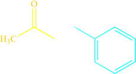

Aldol condensation
The aldol condensation is a self-condensation (addition reaction) of two molecules of aldehyde or ketone in the presence of a dilute base to yield an aldol, resulting in a β-hydroxy aldehyde or a β-hydroxy ketone. Subsequent dehydration produces an α,β-unsaturated aldehyde or ketone. The addition step without subsequent dehydration is an aldol reaction. Both the aldol and dehydration steps may be promoted by base or acid.
A crossed aldol condensation uses two different aldehyde and/or ketone reactants. Such reactions usually give a mixture of multiple condensation products, because there are two or more possible enolate nucleophiles, and two different carbonyl electrophiles. In this crossed aldol condensation reaction example, four condensation products are possible.
A crossed aldol condensation involving an aldehyde or ketone enolate (as the nucleophile) with an aromatic carbonyl compound lacking an alpha-hydrogen (so no enolate can be formed; the electrophile) is called a Claisen-Schmidt condensation. Assuming all of the aldehyde or ketone is converted into its enolate, a Claisen-Schmidt condensation gives just one product (ignore possible E/Z alkene isomers) because only one enolate and only one electrophile are present. In the Claisen-Schmidt condensation shown here, acetone enolate is reacted with benzaldehyde to afford (E)-4-phenylbut-3-en-2-one as the only reaction product.
| Acetone | + |  Benzaldehyde Benzaldehyde | NaOH ⟶ | (E)-4-phenylbut-3-en-2-one |